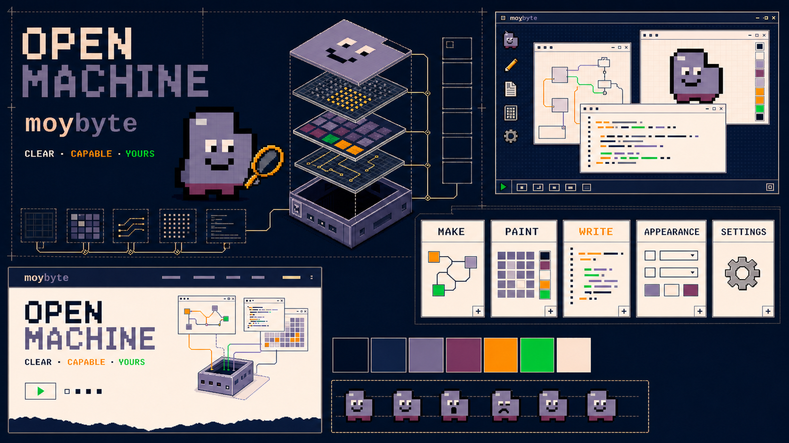
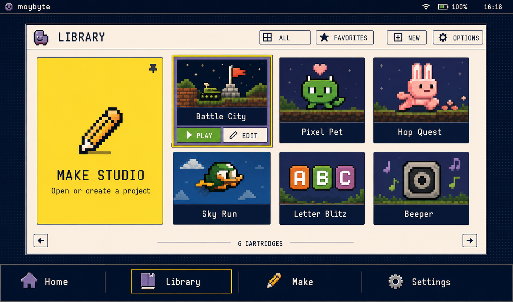
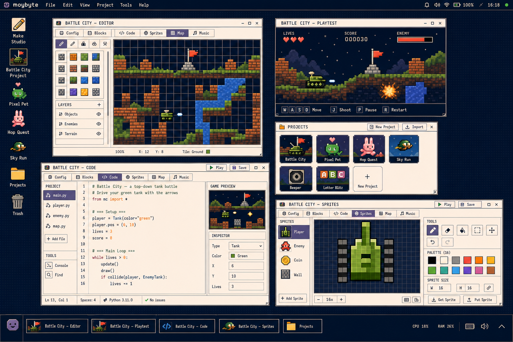

Familiar front door
Large visual cartridges, immediate play, low density, and one obvious route into making.
- Primary card action: PLAY
- Secondary action: CHANGE
- Pinned MAKE entry
- Library is Home
Visual identity v1 · designer brief · July 2026
A friendly computer whose structure is visible—and whose contents invite children to play, open, and change them.
The product model
Large visual cartridges, immediate play, low density, and one obvious route into making.
A precise desktop/workbench with real projects, tabs, files, tools, undo, saving, and playtesting.
Play is a black-box run-and-return action. Moybyte does not decorate or normalize the child's game while it runs.
Relationship reference: dark construction field + warm-light tools + grape Moy

Large targets and rich cartridge art inside the same precision-pixel OS

Precision-pixel desktop; one tabbed Editor plus a separate playtest

The core journey
Selecting a cartridge reveals two clear verbs. Activating the card itself always plays.
CHANGE edits the existing project in place and opens the gentlest Editor tab. There is no separate disposable beginner editor.
The same project exposes Blocks, Code, Sprites, Map, and Music. PLAY returns to the same workspace and tab.
Play is the doorway. Making is what the room is built for.
The pinned MAKE tile opens the project picker. New, Copy, and Delete live there—not on the Library shelf.
One global Settings entry lives in the upper-right OS area, in the same place in Library and Studio.
Color system
MOY64 remains the only runtime palette and the portability contract across host, device, web transport, and cartridges. The shell uses a restrained subset; cartridge art may use all 64 colors.
Quiet, semantic, consistent. Color tells the user what a control does.
Games, covers, art, and child-created work remain the richest color on screen.
CSS may use a deeper surround; actual UI screenshots stay faithful to MOY64.
Red is danger/error only. Green is PLAY/healthy state, not decorative branding. Yellow is focus—not a glow effect.
Visual language
4px base rhythm; 8px primary layout unit; native 1px borders; square by default; 2–4px corners only where large Library targets benefit.
Petme128 remains canonical until another bitmap face proves itself on both 320×240 and 1024×600. No antialiased mockup assumptions.
One- or two-color 16×16 system icons. Moy keeps the grape body, dark-purple feet, cream eyes, dark outline, and identity-critical upper-right bite.
Yellow border plus shape/state change; always visible without hover. No glow, continuous pulse, or color-only state.
Warm cream tools over a dark navy construction field. Optional hard 1–2px offset shadow. No blur, glass, or translucency.
Short, concrete verbs: PLAY, CHANGE, MAKE, SAVE, LIBRARY. Capable and warm; no baby talk, school scoring, streaks, or engagement language.
Responsive product
320 × 240 · T-DECK
1024 × 600 · P4 / HOST
RESPONSIVE · WEB
Designer handoff